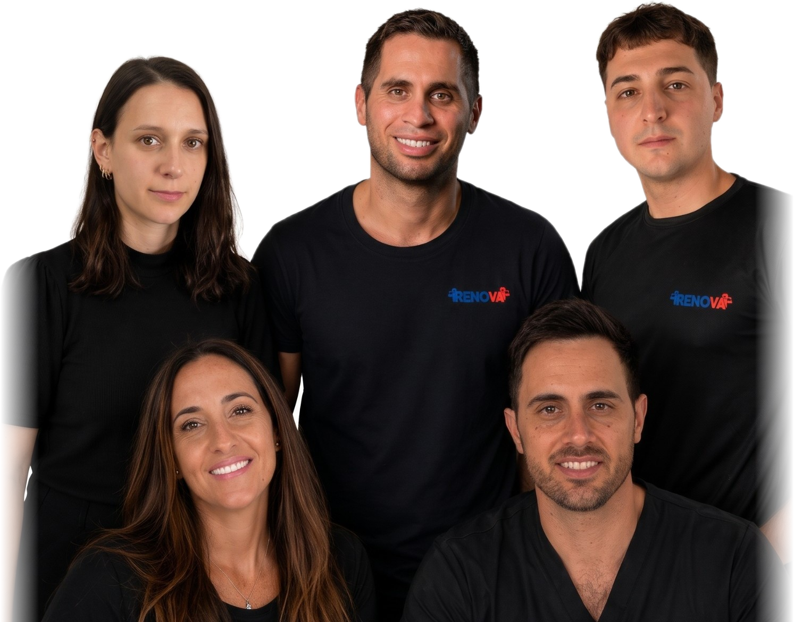
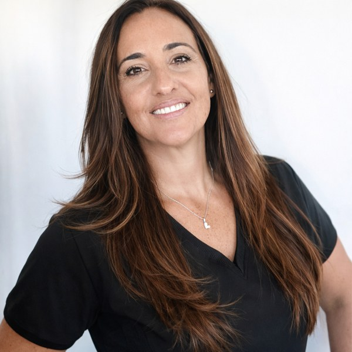
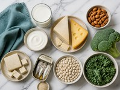
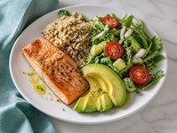
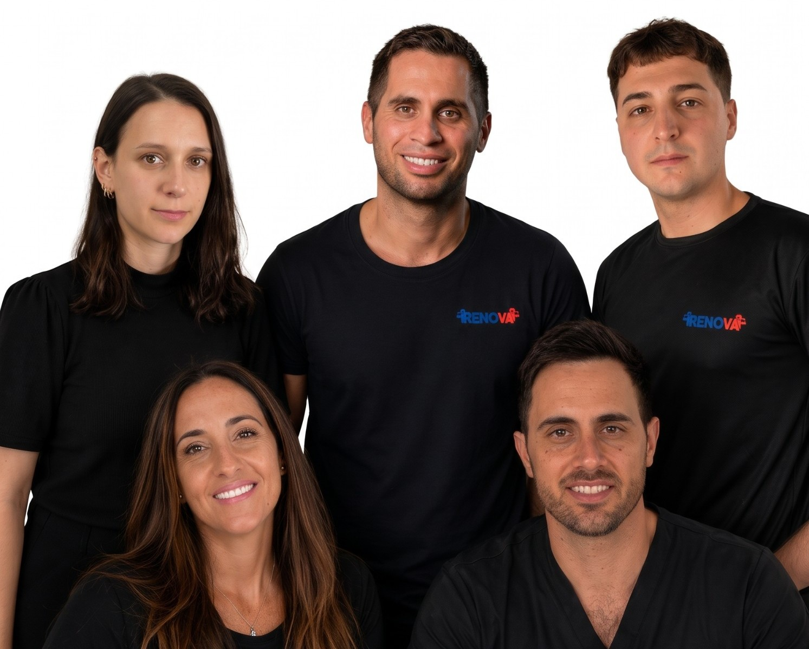

NUTRICIÓN EN
LA MENOPAUSIA
ENTENDÉ TU CUERPO, CUIDALO.
Qué cambia en la perimenopausia y la menopausia,
y cómo acompañarlo con alimentación y hábitos.

ENTENDÉ TU CUERPO, CUIDALO.
Qué cambia en la perimenopausia y la menopausia,
y cómo acompañarlo con alimentación y hábitos.

Para mujeres en perimenopausia, menopausia o posmenopausia. La menopausia no es una enfermedad: es una etapa de la vida. Pero trae cambios reales en el cuerpo, y entenderlos te ayuda a tomar mejores decisiones.

Lic. en Nutrición · M.N. 11773 · Equipo RENOVA
En esta guía te explico, con evidencia y sin mitos, cómo la alimentación puede acompañar tu músculo, tus huesos, tu corazón y tu energía en esta etapa.
Hacé clic donde quieras ir. Para volver al índice, abajo de cada página tenés el botón.
Perimenopausia, menopausia y posmenopausia no son lo mismo. Saber en cuál estás ayuda a entender lo que sentís.
| Etapa | Qué pasa | Cuándo |
|---|---|---|
| Perimenopausia | Los ovarios producen hormonas de forma irregular. Los ciclos cambian y pueden aparecer sofocos, alteraciones del sueño o del ánimo. | Suele empezar entre los 40 y los 50, y dura varios años. |
| Menopausia | Es el momento de la última menstruación. Se confirma después de 12 meses seguidos sin menstruar. | En promedio, alrededor de los 50. |
| Posmenopausia | Los estrógenos quedan bajos de forma estable. Cobra importancia cuidar huesos, músculo y corazón. | El resto de la vida, a partir de la menopausia. |
El estrógeno no solo regula el ciclo: también participa en el mantenimiento del hueso, en la distribución de la grasa corporal, en el metabolismo de las grasas en sangre y en la regulación de la temperatura. Cuando baja, todo eso se modifica.
Muchas mujeres notan cambios años antes de la última menstruación, y no siempre los relacionan con esta etapa. Las hormonas suben y bajan de forma irregular, por eso los síntomas pueden ir y venir.
| Lo que podés notar | Qué hacer |
|---|---|
| Ciclos más cortos, más largos o más abundantes | Registrarlos y consultar si el sangrado es muy abundante o fuera de lo habitual. |
| Sofocos o sudoración nocturna | Identificar disparadores y consultar si afectan tu descanso. |
| Dormir peor, despertarte de noche | Rutina de sueño, menos cafeína y alcohol a la tarde y noche. |
| Cambios de ánimo, irritabilidad, más ansiedad | Movimiento, descanso y pedir ayuda si interfiere en tu vida. |
| Cambios en el peso y la cintura | Fuerza, proteína en cada comida y no hacer dietas extremas. |
No es solo “el metabolismo que se pone lento”: cambia dónde se acumula la grasa y cuánto músculo conservás.
Es la herramienta principal para conservar y ganar músculo.
Ayuda a que el entrenamiento rinda (capítulo 3).
Dietas muy bajas en calorías aceleran la pérdida de músculo.
Evidencia sólida: el entrenamiento de fuerza con una alimentación adecuada en proteínas preserva la masa muscular en mujeres de mediana edad y mayores.
Con los años, el músculo responde menos a la proteína. Por eso importa la cantidad, la calidad y cómo la repartís.
| Momento | Ideas de proteína |
|---|---|
| Desayuno | Yogur natural o griego, huevo, queso, leche |
| Almuerzo / cena | Pollo, carne magra, pescado, legumbres, tofu, huevo |
| Merienda | Yogur, queso fresco, hummus, frutos secos con lácteo |
Las recomendaciones generales para adultos mayores sugieren que la necesidad de proteína puede ser algo mayor que en la juventud, sobre todo si entrenás. La cantidad exacta para vos depende de tu peso, tu actividad y tu salud renal: pedila a tu nutricionista.
Evidencia sólida: repartir la proteína en las comidas y combinarla con entrenamiento de fuerza favorece el mantenimiento muscular.
| Nutriente | Para qué | Fuentes |
|---|---|---|
| Proteína | Músculo y hueso | Huevo, lácteos, carnes, pescado, legumbres, soja |
| Calcio | Hueso | Leche, yogur, quesos, sardinas, almendras, vegetales de hoja, alimentos fortificados |
| Vitamina D | Absorción de calcio, músculo | Sol, pescados grasos, huevo, alimentos fortificados |
| Fibra | Saciedad, intestino, colesterol | Verduras, frutas, legumbres, avena, integrales |
| Omega-3 | Corazón | Pescados grasos (caballa, sardina, salmón), nueces, chía, lino |
| Hierro | Energía (clave si tenés sangrados abundantes) | Carnes, legumbres + vitamina C, vegetales de hoja |
Las cantidades individuales las define tu nutricionista según tu edad, actividad y análisis.
Después de la menopausia la pérdida de hueso se acelera. La buena noticia: hay mucho que podés hacer.
Lácteos, quesos, yogur, sardinas con espinas, almendras, vegetales de hoja verde, bebidas vegetales fortificadas.
Se forma con el sol en la piel; está en pescados grasos, huevo y alimentos fortificados.
El hueso también necesita proteína para mantenerse.
El hueso responde a la carga: entrenar fuerza lo estimula.

Evidencia sólida: calcio y vitamina D adecuados, junto con ejercicio con carga, son pilares en la prevención de la osteoporosis.
Sofocos, sueño, apetito y energía: qué puede ayudar desde la alimentación y qué no tiene respaldo.
| Síntoma | Puede ayudar | Evidencia |
|---|---|---|
| Sofocos | Identificar disparadores (alcohol, picante, café muy caliente, ambientes calurosos). Las isoflavonas de soja muestran un efecto modesto en algunas mujeres. | Limitada |
| Sueño | Cenar liviano y temprano, limitar cafeína después del mediodía y alcohol a la noche, horarios regulares. | Sólida (higiene del sueño) |
| Apetito y ansiedad | Comidas con proteína y fibra, no saltear comidas, dormir mejor y manejar el estrés. | Sólida |
| Energía | Comer a intervalos regulares, hidratarte, hacer actividad física y descartar déficit de hierro o vitamina B12 con tu médico/a. | Sólida |
| Salud intestinal | Fibra variada (verduras, frutas, legumbres, integrales), yogur y agua. | Sólida |
Con la baja de estrógenos aumenta el riesgo cardiovascular. Es el momento de cuidar el corazón con hábitos.

| Hábito | Cómo llevarlo a la práctica |
|---|---|
| Patrón tipo mediterráneo | Verduras, frutas, legumbres, integrales, aceite de oliva, frutos secos y pescado. |
| Fibra soluble | Avena, legumbres, frutas como manzana y cítricos: ayudan con el colesterol. |
| Menos sal | Cociná con hierbas y especias; leé el sodio en las etiquetas. |
| Grasas de calidad | Preferí aceite de oliva, palta, frutos secos y pescado; limitá frituras y procesados. |
| Menos azúcar agregada | Agua como bebida principal; postres ocasionales. |
| Movimiento | Fuerza 2 o 3 veces por semana y caminatas. |
Evidencia sólida: el patrón alimentario mediterráneo y la actividad física regular reducen el riesgo cardiovascular.
Hay muchos productos “para la menopausia”. Pocos tienen respaldo y algunos pueden tener riesgos.
| Suplemento | Qué se sabe |
|---|---|
| Vitamina D | Útil si hay déficit comprobado. La dosis la indica tu médico/a según tu análisis. |
| Calcio | Primero, de los alimentos. El suplemento se indica si la dieta no alcanza. |
| Proteína en polvo | Práctica si no llegás con comida; no es obligatoria. |
| Creatina | Evidencia creciente junto al entrenamiento de fuerza; consultá antes de usarla. |
| Isoflavonas de soja | Efecto modesto sobre sofocos en algunas mujeres; consultá si tenés antecedentes de cáncer de mama. |
| Productos “quemagrasa” o “detox” | Sin evidencia. Pueden interactuar con medicamentos. |
Llevar todo esto a una semana con trabajo, familia y poco tiempo.
| Momento | Ejemplo |
|---|---|
| Desayuno | Yogur natural con avena, fruta y semillas |
| Almuerzo | Pollo con ensalada de hojas, garbanzos y aceite de oliva |
| Merienda | Tostada integral con queso y una fruta |
| Cena | Pescado al horno con verduras y papa |
Es un ejemplo para orientarte, no un menú obligatorio. En Alimentación Inteligente tenés 8 semanas de recetas y combinaciones.
Duerme mal y a la noche pica. Qué cambia: cena completa con proteína, sin café después de las 14, rutina de sueño y registro de síntomas para su consulta.
Su densitometría salió baja. Qué cambia: 3 porciones de lácteos al día, fuerza 2 veces por semana, consulta por vitamina D y seguimiento médico.
Come en aeropuertos y hoteles. Qué cambia: yogur y frutos secos en la cartera, proteína y verduras en el menú, y fuerza en la habitación 20 minutos.
Los sofocos la despiertan. Qué cambia: identifica que el vino y el picante los empeoran, ajusta la cena y consulta con su ginecóloga por opciones de tratamiento.
Casos ilustrativos, no personas reales. Cada situación necesita una evaluación individual.
Lo que circula en redes y lo que dice la evidencia.
Realidad: no hace falta eliminarlos. Elegí integrales, legumbres y frutas, y ajustá la cantidad a tu actividad.
Realidad: puede servirle a algunas personas, pero no es superior a otras formas de comer y puede dificultar llegar a la proteína que necesitás.
Realidad: como alimento (tofu, porotos de soja, bebida) forma parte de una alimentación saludable. Si tenés antecedentes oncológicos, consultá.
Realidad: no hay evidencia de eso en la población general, y son una fuente clave de calcio y proteína.
Realidad: los cambios son reales, pero la fuerza, la proteína, el sueño y el movimiento diario marcan una gran diferencia.
Realidad: la fuerza es prioridad para conservar músculo; el cardio suma, pero no reemplaza.
Elegí tus prioridades, llevá preguntas a la consulta y medí lo que importa.
Llevá: tu registro de síntomas (página ), la lista de medicación y suplementos, y tus últimos análisis.
| Prioridad | Qué voy a hacer | Cómo lo mido |
|---|---|---|
| 1 | ||
| 2 | ||
| 3 |
Cada 4 semanas medí: perímetro de cintura, tu fuerza (repeticiones o peso) y cómo dormís y tu energía (del 1 al 10).
Marcá los que ya hacés y elegí 2 para sumar este mes. No hace falta hacer todo junto.
| Hábito | Ya lo hago | Lo sumo |
|---|---|---|
| Entreno fuerza 2 o 3 veces por semana | ☐ | ☐ |
| Como proteína en cada comida | ☐ | ☐ |
| Como verduras en almuerzo y cena | ☐ | ☐ |
| Sumo lácteos o alternativas con calcio | ☐ | ☐ |
| Como legumbres 2 o 3 veces por semana | ☐ | ☐ |
| Como pescado 1 o 2 veces por semana | ☐ | ☐ |
| Camino o me muevo todos los días | ☐ | ☐ |
| Duermo 7 a 8 horas | ☐ | ☐ |
| Limito alcohol y cafeína a la tarde | ☐ | ☐ |
| Tomo agua durante el día | ☐ | ☐ |
Completalo 2 semanas antes de tu consulta. Puntuá del 0 (nada) al 3 (mucho). En “Actividad”, anotá si entrenaste o caminaste; en “Hábito”, el que estés trabajando. No sirve para diagnosticar: es información para tu profesional.
| Día | Sofocos | Sueño | Ánimo | Energía | Actividad | Hábito |
|---|---|---|---|---|---|---|
| Día 1 | ||||||
| Día 2 | ||||||
| Día 3 | ||||||
| Día 4 | ||||||
| Día 5 | ||||||
| Día 6 | ||||||
| Día 7 | ||||||
| Día 8 | ||||||
| Día 9 | ||||||
| Día 10 | ||||||
| Día 11 | ||||||
| Día 12 | ||||||
| Día 13 | ||||||
| Día 14 |
Revisión de contenidos: María Eugenia Ballini, Lic. en Nutrición · M.N. 11773.

Esta guía te explica la etapa. Si querés un plan hecho para vos, lo armamos con el equipo RENOVA:
Un entrenamiento presencial por mes y seguimiento semanal a distancia, con toda tu rutina específica.
Consultá por tu plan integral 1 a 1 con Nacho y contanos en qué etapa estás.